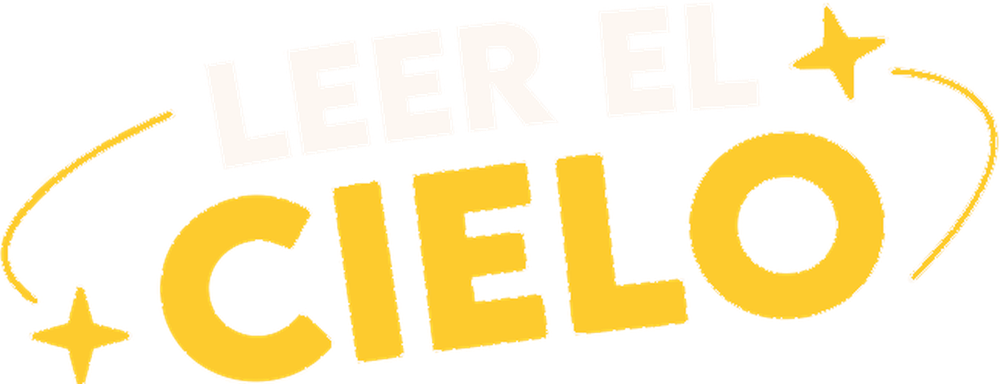

Biblioteca Central Estatal Wigberto Jiménez Moreno
Sede de las jornadas y anfitriona del programa: sus salas, la terraza y sus propios telescopios.
Jornadas astronómicas · León, Guanajuato

Así como en la biblioteca aprendemos a leer libros, en estas jornadas aprendemos a leer el universo. Este programa de divulgación busca acercar la ciencia, en particular la astronomía y la cosmología, a las familias de León y Guanajuato, con jornadas gratuitas de charlas, talleres y observación astronómica en la Biblioteca Central Estatal Wigberto Jiménez Moreno. Un esfuerzo conjunto de la Secretaría de Cultura, la Universidad de Guanajuato (DCI-CL), el CIO y otras instituciones.
Cargando jornadas…
Cada jornada es una tarde-noche gratuita y para toda la familia: escuchamos a especialistas, armamos y jugamos en talleres, viajamos por el planetario y, cuando el clima lo permite, miramos el cielo con telescopios.
Sede de las jornadas y anfitriona del programa: sus salas, la terraza y sus propios telescopios.
Investigadoras, investigadores y estudiantes del Departamento de Física (Campus León) imparten charlas, talleres y juegos científicos.
Participa con sus telescopios para la observación y, en ocasiones, con talleres de óptica y astronomía.
Programas, invitados y pósters de cada jornada. Elige una para ver su página.
Jornadas que llevan el programa a bibliotecas de otros municipios de Guanajuato.
Sigue a quienes organizan Leer el Cielo para enterarte de la próxima jornada.




